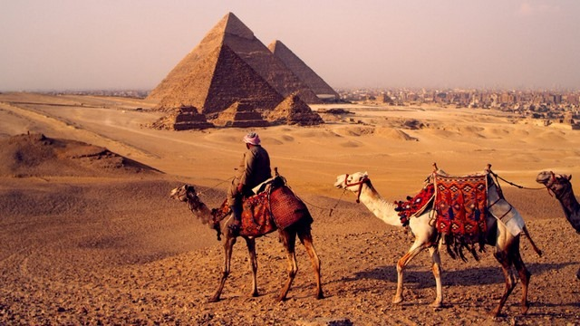
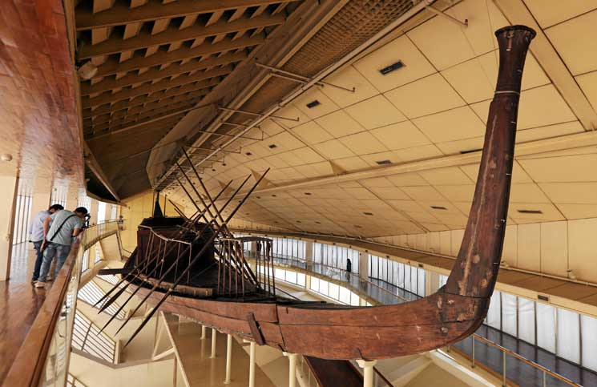
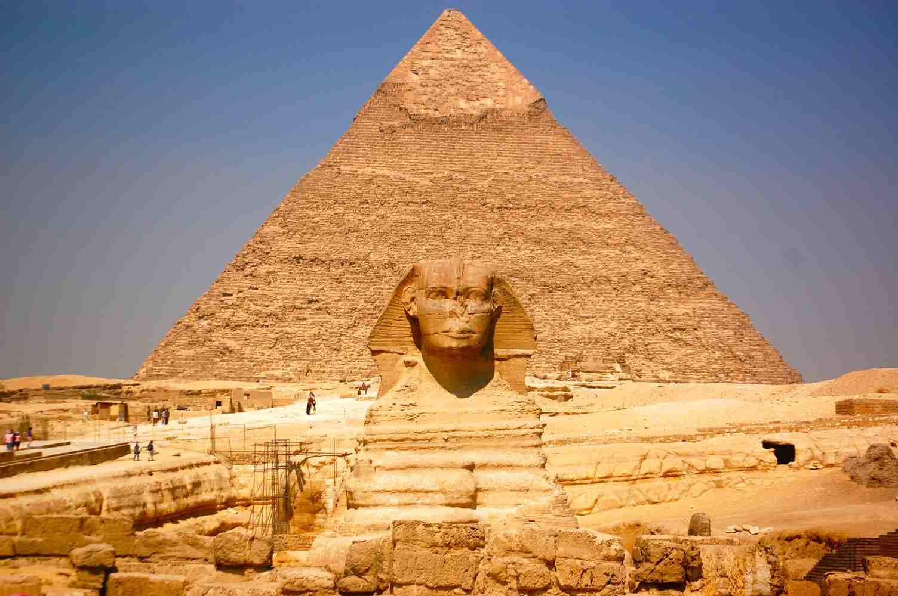
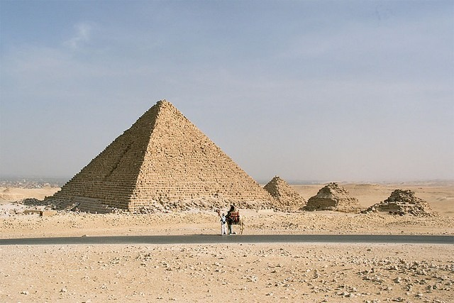

اهرامات مصر الجيزة في القاهرة تقع على هضبة الجيزة في محافظة الجيزة اي على الضفة الغربية لنهر النيل .وهي تشمل ثلاثة اهرامات خوفو ،خفرع ،منقرع والتي بنيت قبل حوالي 25 قرن قبل الميلاد وهي مقابر ملكية كل منها يحمل اسم الملك الذي بناه والذي دفن فيه والبناء الهرمي هنا هو مرحلة تطور عمارة المقابر في مصر القديمة. وتعد الاهرامات من اهم اماكن السياحة في مصر
تتصف اهرامات مصر الثلاثة بأنها احد اهم عجائب الدنيا السبعة واحد اكبر الغاز التاريخ القديم والحديث واهم الاماكن السياحية في القاهرة
اهرامات الجيزة
هرامات الجيزة من اهم المعالم السياحية في القاهرة وحتى حول العالم وتعتبر من اكبر واهم المباني الاثرية التي بنيت على مر التاريخ لعجائب هندستها وضخامتها ونذكر لكم اهم الاهرامات
هرم خوفو
هرم خوفو العائد لخوفو الذي خلف اباه سنفرو وامه هي الملكة “حتب حرس الأولى”، والذي يعود الى 2650 ق.ب وهو الاسم المختصر لـ “خنوم خو أف أوي” وتعني خنوم هو الذي يحميني، ويذكر التاريخ لخوفو أنه مشيّد اعظم بناء على وجه الأرض وهو هرم الجيزة الاكبر.
• يمكنكم ايضاً زيارة سفينة خوفو والتي كانت تسمى مركبة الشمس. في عام 1954 عند قاعدة الهرم الأكبر اكتشف عالم الآثار المصري كمال الملاخ حفرتين مسقوفتين عند قاعدة هرم خوفو الجنوبية . عُثر في قاع إحداهما على سفينة مفككة متقنة النحت من خشب الأرز، كان عدد أجزاء المركب 1224 قطعة، لا ينقص منها أي جزء، من ضمنها خمسة أزواج من المجاديف واثنين من زعانف التوجيه ومقصورة.
هرم خوفو هو اكبر اهرامات مصر

اسعار بطاقات الدخول واوقات الزيارة
سعر بطاقة الدخول لهرم خوفو اكبر اهرامات مصر 200 جنيه للسياح، و100 جنيه للطلاب.
الهرم متاح للزيارة كافة ايام الأسبوع من الساعة 8:00 صباحاً حتى الساعة 17:00 مساءً
هرم خفرع
هرم خفرع هو الهرم المتوسط بين اهرامات مصر ، بناه الملك خفرع رابع ملوك الأسرة الرابعة ابن الملك خوفو. عثر ضمن مجموعته الهرمية على تماثيل من حجر الشست في معبد الوادي الخاص، ومن بينها تمثال من أجمل ما أنتجه فن النحت المصري، وهو موجود الآن بالمتحف المصري، وينسب له نحت صخرة تمثال أبي الهول، أطلق خفرع على هرمه اسم (العظيم)

اسعار بطاقات الدخول واوقات الزيارة
سعر بطاقة الدخول للشخص الواحد 40 جنيه، وللطلاب 20 جنيه
هرم خفرع متاح للزيارة كافة ايام الأسبوع من الساعة 8:00 صباحاً حتى الساعة 5:00 مساءً
هرم منقرع
هرم منقرع هو احد اهرامات الجيزة في القاهرة بناه الفرعون منقرع ابن الملك خفرع، وجد في احدى ممرات الهرم تابوت خشبي عليه اسم منقرع وبه مومياؤه، مومياء منقرع محفوظة الآن في المتحف البريطاني.
والى الجنوب من هرم منقرع يوجد ثلاثة أهرمات خصصت للملكات تمتد بإتجاه شرق غرب الهرم الأول خاص بالملكة خع مرر نبتي الثانية زوجة الملك منقرع

اسعار بطاقات الدخول واوقات الزيارة
سعر بطاقة الدخول للسائح الواحد 40 جنيه، وللطلاب 20 جنيهً
هرم منقرع متاح للزيارة كافة ايام الأسبوع من الساعة 8:00 صباحاً حتى الساعة 5:00 مساءً